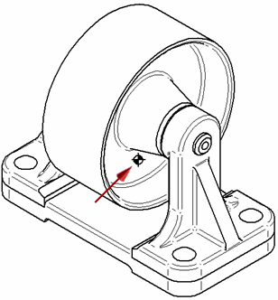

Display a coordinate system or center of mass in a drawing view
-
Right-click a drawing view of the model and choose Properties.
-
In the Drawing View Properties dialog box, click the Display tab.
-
On the Display tab, do all of the following:
-
Click the Parts List Options button , and then choose List All.
Selecting this option lists the coordinate system, the center of mass, and reference planes that are available in the drawing view.
-
From the list on the left side of the Display tab, select the coordinate system or center of mass that you want to show.
-
On the right side of the Display tab, under Selected Part(s) Display, click the Show check box.
-
Click Apply.
-
-
Update the drawing view.
By default, the location of the center of mass or coordinate system is marked by a point. As an alternative, you can use the block graphics shown in the following illustration.

The name of this block is COM. It is included in draft document templates. It is listed on the Library tab, when the Show Blocks button is selected, under Active Document.
Note:If you are replacing a center of mass or coordinate system block with a new one, you must first clear the Show check box and update the drawing view. Then repeat the steps listed above.
-
To show the center of mass and coordinate system in a drawing view, material and physical properties must exist in the model. For more information, see Physical properties of parts and assemblies.
-
You can define a custom coordinate system or center of mass by creating the graphics and saving them as a block. For more information, see Define a custom center of mass or coordinate system for a drawing.
How do I
Create a blockDefine a custom center of mass or coordinate system for drawings
Learn more
Displaying the center of mass or coordinate system on a drawingLook up more details
Select Block dialog boxDrawing View Display Defaults dialog box
Edge Display tab (Solid Edge Options dialog box)
Annotation tab (Solid Edge Options dialog box)